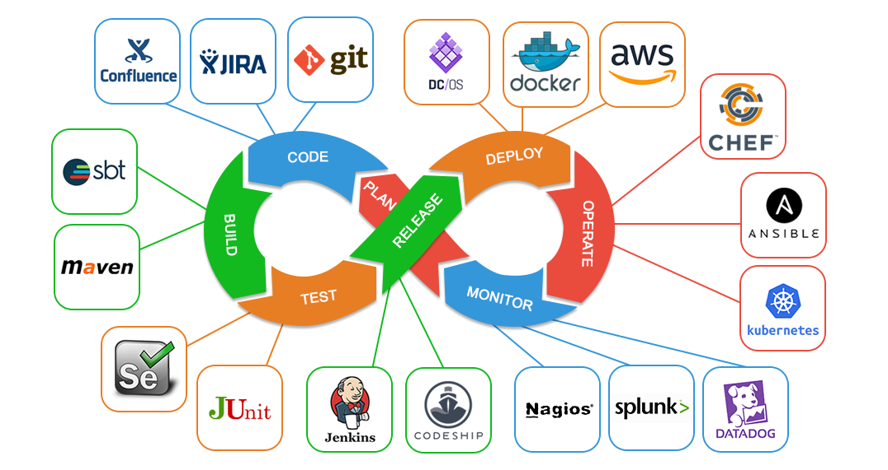
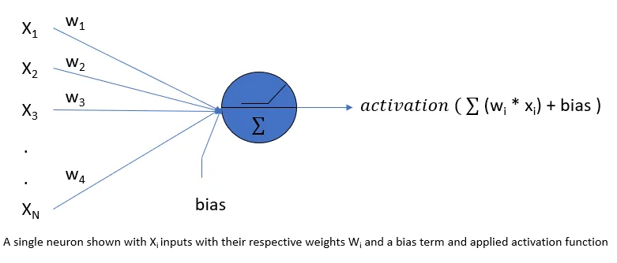
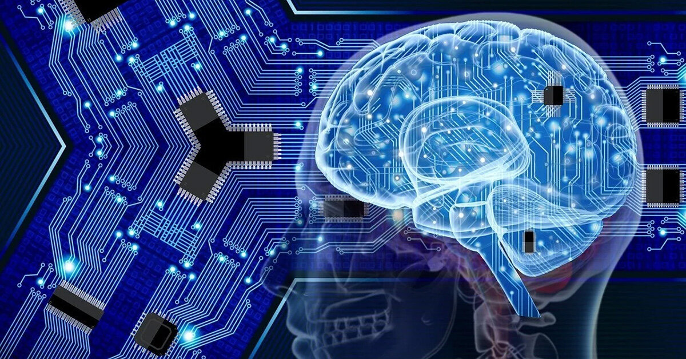
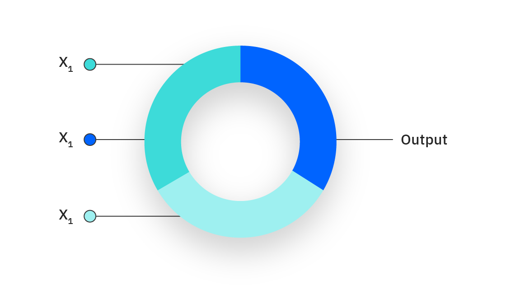
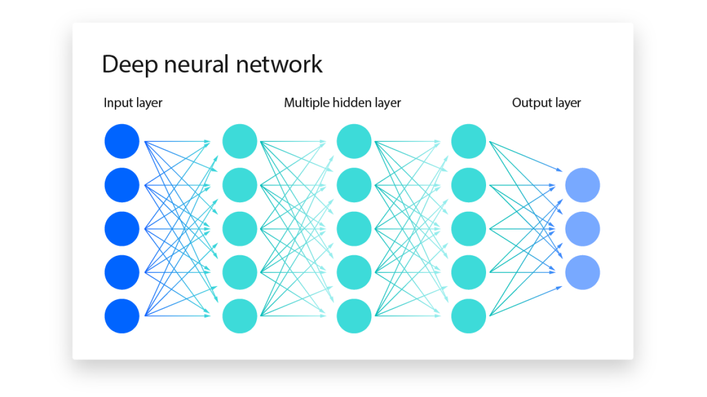
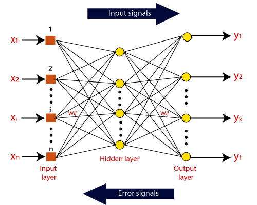

The DevOps is the combination of two words, one is Development and other is Operations. It is a culture to promote the development and operation process collectively.
The DevOps tutorial will help you to learn DevOps basics and provide depth knowledge of various DevOps tools such as Git, Ansible, Docker, Puppet, Jenkins, Chef, Nagios, and Kubernetes.

What is DevOps?
The DevOps is a combination of two words, one is software Development, and second is Operations. This allows a single team to handle the entire application lifecycle, from development to testing, deployment, and operations. DevOps helps you to reduce the disconnection between software developers, quality assurance (QA) engineers, and system administrators.
“Programming is not a zero-sum game. Teaching something to a fellow programmer doesn’t take it away from you.”.
“Programming is not a zero-sum game. Teaching something to a fellow programmer doesn’t take it away from you.”
DevOps promotes collaboration between Development and Operations team to deploy code to production faster in an automated & repeatable way.
DevOps helps to increase organization speed to deliver applications and services. It also allows organizations to serve their customers better and compete more strongly in the market.
DevOps can also be defined as a sequence of development and IT operations with better communication and collaboration.
DevOps has become one of the most valuable business disciplines for enterprises or organizations. With the help of DevOps, quality, and speed of the application delivery has improved to a great extent.
DevOps is nothing but a practice or methodology of making "Developers" and "Operations" folks work together. DevOps represents a change in the IT culture with a complete focus on rapid IT service delivery through the adoption of agile practices in the context of a system-oriented approach.
DevOps is all about the integration of the operations and development process. Organizations that have adopted DevOps noticed a 22% improvement in software quality and a 17% improvement in application deployment frequency and achieve a 22% hike in customer satisfaction. 19% of revenue hikes as a result of the successful DevOps implementation.
DevOps History
In 2009, the first conference named DevOpsdays was held in Ghent Belgium. Belgian consultant and Patrick Debois founded the conference.
In 2012, the state of DevOps report was launched and conceived by Alanna Brown at Puppet.
In 2014, the annual State of DevOps report was published by Nicole Forsgren, Jez Humble, Gene Kim, and others. They found DevOps adoption was accelerating in 2014 also.
In 2015, Nicole Forsgren, Gene Kim, and Jez Humble founded DORA (DevOps Research and Assignment).
In 2017, Nicole Forsgren, Gene Kim, and Jez Humble published "Accelerate: Building and Scaling High Performing Technology Organizations".
DevOps Architecture Features
Here are some key features of DevOps architecture, such as:
) Automation
Automation can reduce time consumption, especially during the testing and deployment phase. The productivity increases, and releases are made quicker by automation. This will lead in catching bugs quickly so that it can be fixed easily. For contiguous delivery, each code is defined through automated tests, cloud-based services, and builds. This promotes production using automated deploys.
2) Collaboration
The Development and Operations team collaborates as a DevOps team, which improves the cultural model as the teams become more productive with their productivity, which strengthens accountability and ownership. The teams share their responsibilities and work closely in sync, which in turn makes the deployment to production faster.
3) Integration
Applications need to be integrated with other components in the environment. The integration phase is where the existing code is combined with new functionality and then tested. Continuous integration and testing enable continuous development. The frequency in the releases and micro-services leads to significant operational challenges. To overcome such problems, continuous integration and delivery are implemented to deliver in a quicker, safer, and reliable manner.
) Configuration management
It ensures the application to interact with only those resources that are concerned with the environment in which it runs. The configuration files are not created where the external configuration to the application is separated from the source code. The configuration file can be written during deployment, or they can be loaded at the run time, depending on the environment in which it is running.
Neural networks mimic the basic functioning of the human brain and are inspired by how the human brain interprets information.They solve various real-time tasks because of its ability to perform computations quickly and its fast responses.
Artificial Neural Network has a huge number of interconnected processing elements, also known as Nodes. These nodes are connected with other nodes using a connection link. The connection link contains weights, these weights contain the information about the input signal. Each iteration and input in turn leads to updation of these weights. After inputting all the data instances from the training data set, the final weights of the Neural Network along with its architecture is known as the Trained Neural Network. This process is called Training of Neural Networks.These trained neural networks solve specific problems as defined in the problem statement.
Types of tasks that can be solved using an artificial neural network include Classification problems, Pattern Matching, Data Clustering, etc.

In the process of training neural network one of the important hyper-parameter is the activation function and we need to make a choice regarding what activation function to use in hidden layers as well as in the output layer.
Activation function decides, whether a neuron should be fired or not, by calculating the weighted sum of input and a bias term. Activation function can be linear or non-linear transformation, applied to the input signal and the output from the activation function is fed to the next layer of neuron as input.
Basic building blocks of neural network training
Before moving to different activation functions and their derivatives it is important to mention basic building blocks of neural network training. These blocks can be divided into forward pass, measurement of network's output error and the backward pass.
First, in forward pass the training instances are fed to the neural network. This results in a forward cascade of computations across the layers(using current set of weights) and network’s output prediction is calculated. Second, the network's output error is measured, that is the difference between the desired output and actual predicted output. Thirdly, in backward pass we back-propagate through each layer to measure error contribution from each connection and finally tweak the connection weights to reduce the error.
Why we are interested in derivative of activation functions?
When we implement back-propagation for a neural network we need to compute the gradient or the derivative of the activation functions. Therefore, one of the primary considerations while choosing activation functions is that it should be differentiable.

What is a neural network?
A neural network is a machine learning program, or model, that makes decisions in a manner similar to the human brain, by using processes that mimic the way biological neurons work together to identify phenomena, weigh options and arrive at conclusions.
Every neural network consists of layers of nodes, or artificial neurons—an input layer, one or more hidden layers, and an output layer. Each node connects to others, and has its own associated weight and threshold. If the output of any individual node is above the specified threshold value, that node is activated, sending data to the next layer of the network. Otherwise, no data is passed along to the next layer of the network.
Neural networks rely on training data to learn and improve their accuracy over time. Once they are fine-tuned for accuracy, they are powerful tools in computer science and artificial intelligence, allowing us to classify and cluster data at a high velocity. Tasks in speech recognition or image recognition can take minutes versus hours when compared to the manual identification by human experts. One of the best-known examples of a neural network is Google’s search algorithm.
Neural networks are sometimes called artificial neural networks (ANNs) or simulated neural networks (SNNs). They are a subset of machine learning, and at the heart of deep learning models.
Ebook
Build responsible AI workflows with AI governance
Learn the building blocks and best practices to help your teams accelerate responsible AI.
Related content
Register for the ebook on generative AI
How do neural networks work?
Think of each individual node as its own linear regression model, composed of input data, weights, a bias (or threshold), and an output. The formula would look something like this:
∑wixi + bias = w1x1 + w2x2 + w3x3 + bias
output = f(x) = 1 if ∑w1x1 + b>= 0; 0 if ∑w1x1 + b < 0
Once an input layer is determined, weights are assigned. These weights help determine the importance of any given variable, with larger ones contributing more significantly to the output compared to other inputs. All inputs are then multiplied by their respective weights and then summed. Afterward, the output is passed through an activation function, which determines the output. If that output exceeds a given threshold, it “fires” (or activates) the node, passing data to the next layer in the network. This results in the output of one node becoming in the input of the next node. This process of passing data from one layer to the next layer defines this neural network as a feedforward network.
Let’s break down what one single node might look like using binary values. We can apply this concept to a more tangible example, like whether you should go surfing (Yes: 1, No: 0). The decision to go or not to go is our predicted outcome, or y-hat. Let’s assume that there are three factors influencing your decision-making:
Are the waves good? (Yes: 1, No: 0)
Is the line-up empty? (Yes: 1, No: 0)
Has there been a recent shark attack? (Yes: 0, No: 1)
Then, let’s assume the following, giving us the following inputs:
X1 = 1, since the waves are pumping
X2 = 0, since the crowds are out
X3 = 1, since there hasn’t been a recent shark attack
Now, we need to assign some weights to determine importance. Larger weights signify that particular variables are of greater importance to the decision or outcome.
W1 = 5, since large swells don’t come around often
W2 = 2, since you’re used to the crowds
W3 = 4, since you have a fear of sharks
Finally, we’ll also assume a threshold value of 3, which would translate to a bias value of –3. With all the various inputs, we can start to plug in values into the formula to get the desired output.
Y-hat = (1*5) + (0*2) + (1*4) – 3 = 6

If we use the activation function from the beginning of this section, we can determine that the output of this node would be 1, since 6 is greater than 0. In this instance, you would go surfing; but if we adjust the weights or the threshold, we can achieve different outcomes from the model. When we observe one decision, like in the above example, we can see how a neural network could make increasingly complex decisions depending on the output of previous decisions or layers.
In the example above, we used perceptrons to illustrate some of the mathematics at play here, but neural networks leverage sigmoid neurons, which are distinguished by having values between 0 and 1. Since neural networks behave similarly to decision trees, cascading data from one node to another, having x values between 0 and 1 will reduce the impact of any given change of a single variable on the output of any given node, and subsequently, the output of the neural network.
As we start to think about more practical use cases for neural networks, like image recognition or classification, we’ll leverage supervised learning, or labeled datasets, to train the algorithm. As we train the model, we’ll want to evaluate its accuracy using a cost (or loss) function. This is also commonly referred to as the mean squared error (MSE). In the equation below,
i represents the index of the sample,
y-hat is the predicted outcome,
y is the actual value, and
m is the number of samples.
𝐶𝑜𝑠𝑡 𝐹𝑢𝑛𝑐𝑡𝑖𝑜𝑛= 𝑀𝑆𝐸=1/2𝑚 ∑129_(𝑖=1)^𝑚▒(𝑦 ̂^((𝑖) )−𝑦^((𝑖) ) )^2
Ultimately, the goal is to minimize our cost function to ensure correctness of fit for any given observation. As the model adjusts its weights and bias, it uses the cost function and reinforcement learning to reach the point of convergence, or the local minimum. The process in which the algorithm adjusts its weights is through gradient descent, allowing the model to determine the direction to take to reduce errors (or minimize the cost function). With each training example, the parameters of the model adjust to gradually converge at the minimum.
See this IBM Developer article for a deeper explanation of the quantitative concepts involved in neural networks.
Most deep neural networks are feedforward, meaning they flow in one direction only, from input to output. However, you can also train your model through backpropagation; that is, move in the opposite direction from output to input. Backpropagation allows us to calculate and attribute the error associated with each neuron, allowing us to adjust and fit the parameters of the model(s) appropriately.
Gradient descent diagram
Trial
Now available: watsonx.ai
The all new enterprise studio that brings together traditional machine learning along with new generative AI capabilities powered by foundation models.

Types of neural networks
Neural networks can be classified into different types, which are used for different purposes. While this isn’t a comprehensive list of types, the below would be representative of the most common types of neural networks that you’ll come across for its common use cases:
The perceptron is the oldest neural network, created by Frank Rosenblatt in 1958.
Feedforward neural networks, or multi-layer perceptrons (MLPs), are what we’ve primarily been focusing on within this article. They are comprised of an input layer, a hidden layer or layers, and an output layer. While these neural networks are also commonly referred to as MLPs, it’s important to note that they are actually comprised of sigmoid neurons, not perceptrons, as most real-world problems are nonlinear. Data usually is fed into these models to train them, and they are the foundation for computer vision, natural language processing, and other neural networks.
Convolutional neural networks (CNNs) are similar to feedforward networks, but they’re usually utilized for image recognition, pattern recognition, and/or computer vision. These networks harness principles from linear algebra, particularly matrix multiplication, to identify patterns within an image.
Recurrent neural networks (RNNs) are identified by their feedback loops. These learning algorithms are primarily leveraged when using time-series data to make predictions about future outcomes, such as stock market predictions or sales forecasting.
How do artificial neural networks work?
Artificial Neural Network can be best represented as a weighted directed graph, where the artificial neurons form the nodes. The association between the neurons outputs and neuron inputs can be viewed as the directed edges with weights. The Artificial Neural Network receives the input signal from the external source in the form of a pattern and image in the form of a vector. These inputs are then mathematically assigned by the notations x(n) for every n number of inputs.
What is Artificial Neural Network
Afterward, each of the input is multiplied by its corresponding weights ( these weights are the details utilized by the artificial neural networks to solve a specific problem ). In general terms, these weights normally represent the strength of the interconnection between neurons inside the artificial neural network. All the weighted inputs are summarized inside the computing unit.
If the weighted sum is equal to zero, then bias is added to make the output non-zero or something else to scale up to the system's response. Bias has the same input, and weight equals to 1. Here the total of weighted inputs can be in the range of 0 to positive infinity. Here, to keep the response in the limits of the desired value, a certain maximum value is benchmarked, and the total of weighted inputs is passed through the activation function.
The activation function refers to the set of transfer functions used to achieve the desired output. There is a different kind of the activation function, but primarily either linear or non-linear sets of functions. Some of the commonly used sets of activation functions are the Binary, linear, and Tan hyperbolic sigmoidal activation functions. Let us take a look at each of them in details:
Binary:
In binary activation function, the output is either a one or a 0. Here, to accomplish this, there is a threshold value set up. If the net weighted input of neurons is more than 1, then the final output of the activation function is returned as one or else the output is returned as 0.
Sigmoidal Hyperbolic:
The Sigmoidal Hyperbola function is generally seen as an "S" shaped curve. Here the tan hyperbolic function is used to approximate output from the actual net input. The function is
